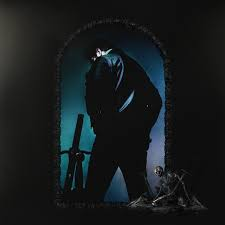

Genero Musical HIP-HOP
Los sonidos urbanos son una mezcla de géneros musicales que incluyen el hip hop, el R&B, el reggae, el soul y otros estilos que se originaron en las comunidades urbanas. Los sonidos urbanos han sido una plataforma para la expresión artística y la protesta social.
se ha convertido en uno de los estilos más influyentes en la música popular actual.
PERSONALMENTE siempre hubo algo en la musica que me enamoro desde corta edad, las diferentes formas en que la música puede transportarnos y hacernos sentir emociones intensas. Y si hablamos de grandes iconos del genero que voy a presentar, Snoop Dogg, Eminem, 50 Cent y Nas son algunos de los nombres que no pueden faltar en la lista.
Snoop Dog:
Ha sido una fuerza en el hip hop desde la década de 1990, un album que yo disfruto de snoop es en defenitiva Neva Left, aunque puede ser un proyecto "reciente" ya que es del 2017, en simple palabras es es una verdadera obra maestra que refleja la habilidad y la experiencia de Snoop Dogg como artista. El álbum presenta un sonido de hip hop clásico, pero también tiene un toque moderno
Snoop Dogg es un artista verdaderamente icónico en el mundo de la música, y su álbum "Neva Left" es una prueba de su habilidad y su pasión por el hip hop. Si eres un amante del genero urbano y la música en general, este álbum es una necesidad en tu colección de música.

Nas:
Si te agrada un sonido mas "old school" del hip hop, sin duda un album que deberias escuchar es illmatic de Nas.Este álbum es considerado uno de los álbumes más influyentes en la historia del hip-hop y es aclamado por la crítica por sus letras fuertes, su producción excepcional y su narración cohesiva,Nas cuenta historias sobre la vida en los barrios bajos de Nueva York.
La producción en "Illmatic" es igualmente impresionante, canción en "Illmatic" es una joya por derecho propio, pero algunas de las canciones más destacadas incluyen "NY State of Mind", "Life's a Bitch" y "The World is Yours".

Eminem:
El clasico Slim Shady, es uno de los artistas más influyentes e icónicos en la historia del rap. A lo largo de su carrera, ha demostrado un talento innegable en la escritura de letras inteligentes y provocativas que abordan temas personales y sociales de manera honesta y directa.
Voy a hablar de dos de sus proyectos, Curtain Call: The Hits, recopilatorio incluye las mejores canciones de Eminem desde su debut en 1996 hasta 2005, es un buen album para conocer su sonido.
Quieres escuchar algo "reciente", un toque moderno, escucha Kamikaze, En este álbum, Eminem colabora con artistas como Joyner Lucas, Royce Da 5'9" y Jessie Reyez, y logra crear un sonido que es tanto actual como retro, Eminem es un artista legendario que ha sido capaz de mantenerse relevante y emocionante a lo largo de su carrera y vale la pena esucharlo.

Yendonos a referentes actuales nos podemos encontrar con verdaderas joyas como:
Tyler, The Creator:
Te recomiendo escuchar uno de los más aclamados por la crítica y por los fans. Este álbum es una obra maestra en cuanto a la producción musical y lírica
Call me if you get lost, una mezcla de historias ficticias y autobiográficas, con temas que van desde el amor y el desamor, hasta el éxito y la fama. Cada canción es única y tiene un mensaje que va más allá de las palabras.
canciones más suaves como "WusYaName" y "Masa", hasta las más enérgicas como "Lemonhead" y "Juggernaut", todas las canciones tienen un ritmo y una melodía que te hacen sentir la música.

Mac Miller:
Mac Miller fue un artista muy querido por la comunidad musical, y su muerte en 2018 dejó un gran vacío en la escena, es un artista que tenia mucho mas por dar.
GO:OD AM es un album que muestra su talento y su habilidad como artista. Las producciones de este álbum son una mezcla de sonidos melancólicos y eufóricos, que reflejan el estado de ánimo de Miller en ese momento.
Las canciones como 100 Grandkids y Weekend tienen ese toque energetico, mientras que por otro lado nos encontramos con Perfect Circle / God Speed y ROS tienen una producción más lenta y emocional que te lleva a un viaje introspectivo.
Si eres un fanático de la música que busca una experiencia musical significativa y emocional, definitivamente debes escuchar este álbum y sumergirte en la pasión y devoción que Mac Miller tenía por la música y escuchar algunos de sus otros proyectos.

Post Malone
Uno de los artistas que realmente ha capturado mi atención en los últimos años es Post Malone, ha logrado crear su propio estilo de música que se encuentra en la intersección del hip hop, el pop y el rock.Tiene una cancion con Ozzy v:
Tiene 2 proyectos que son tanto similares como completamente distintos, beerbongs & bentleys y Hollywoods bleeding
beerbongs & bentleys es una combinación perfecta de ritmos contagiosos y letras que cuentan historias íntimas. Las canciones en el álbum van desde melodías relajadas como "Better Now" y "Stay" hasta canciones más enérgicas como "Rockstar" y "Psycho".Se puede contar como e album que lanzo a post a reconocimiento.
La producción musical de este álbum es impresionante, y Post Malone demuestra su habilidad para mezclar diferentes géneros musicales y crear una experiencia auditiva única y emocionante.

Hollywood's Bleeding es un excelente ejemplo de su versatilidad y habilidad para crear música, el álbum presenta colaboraciones impresionantes con artistas como Travis Scott, Ozzy Osbourne, Halsey y Future, lo que agrega una dimensión adicional a la música.
Post Malone es un artista que realmente se destaca en la industria de la música. Su creatividad, versatilidad y talento son innegables, y el álbum "Hollywood's Bleeding" es una obra maestra que realmente lo muestra en su mejor momento.
Si buscas una buena experiencia musical, este albul es muy bueno para encontrar es seguridad musical
Ye:
Uno de los artistas que siempre ha logrado emocionarme con su música es Kanye West, puede que sea la persona mas cancelable y mentalmente inestable, pero musicalmente este sujeto es increible.
Sus Albums son un verdadero viaje emocional y musical que combina la producción magistral de Kanye, su habilidad lírica y su capacidad de contar historias, todo en un paquete completo y cohesivo, tiene increibles proyectos que valen la pena escucharlos como My Beautiful Dark Twisted Fantasy.
Pero si tengo que hablar de un album que verdaderamente me encanto y lo espere durante el 2021 es Donda, n tributo a su madre, quien falleció en 2007, y lleva el mismo nombre que ella.
Donda" es una obra maestra en muchos sentidos. La producción musical es impresionante, con Kanye mezclando diferentes géneros y sonidos para crear una experiencia auditiva única, na de las cosas que más resalta en el álbum es la inclusión de varios artistas destacados en la industria de la música, como Jay-Z, Kid Cudi, The Weeknd y Roddy Ricch. Estas colaboraciones añaden una dimensión emocionante al álbum y demuestran la influencia y el respeto que Kanye tiene en la comunidad musical. Si aún no lo has escuchado, te recomiendo que lo hagas, me fascina en especial Jail y su continuacio Jail pt 2, es una experiencia musical que no se compara.

Este genio me hizo escuchar canciones religiosas y te lanza cosas increibles aveces de la nada como la siguiente
Joyita de Ye